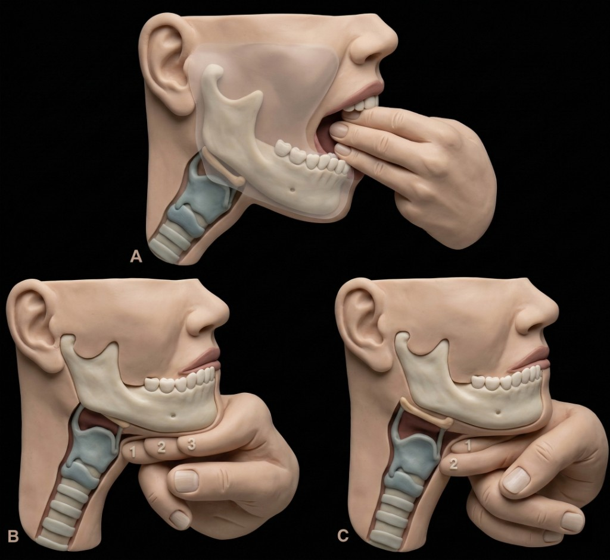
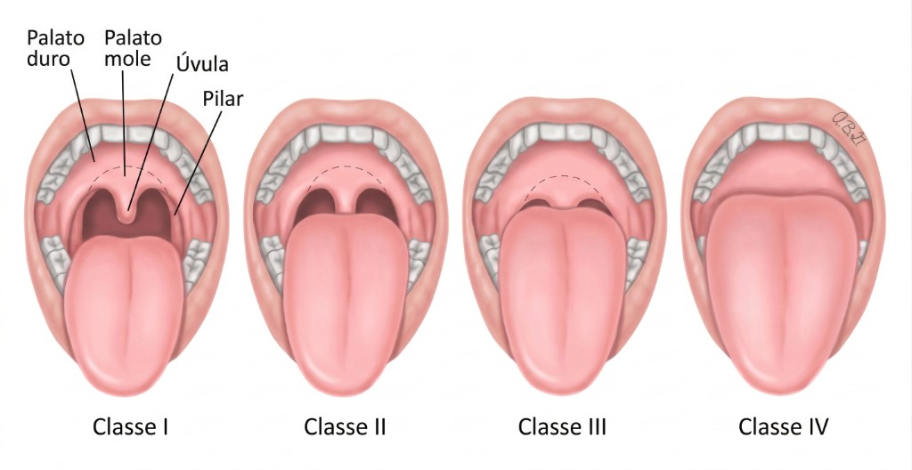

LEMON
Via Aérea · Intubação difícil
Avaliação LEMON
Ferramenta rápida de avaliação da via aérea para prever intubação difícil. Avalie cada componente.
L — Look (Aspecto externo)
Observar características que sugerem dificuldade
Incisivos proeminentes, distância interincisal reduzida, distância tireomentoniana reduzida, mandíbula retraída, pescoço curto ou grosso.
E — Evaluate (Regra 3-3-2)
Avaliar três medidas
Abertura de boca ≥ 3 dedos (≈ 3 cm); distância mento-hióide ≥ 3 dedos; distância tireomentoniana ≥ 2 dedos. Alteração em qualquer uma sugere maior dificuldade.

M — Mallampati
Classificação da orofaringe
Classes III e IV associam-se a maior chance de intubação difícil. Na versão modificada (emergência), o Mallampati pode ser omitido quando não for possível avaliar.

O — Obstructed (Via aérea obstruída)
Obstrução ou edema
Presença de corpo estranho, edema, trauma, tumor ou estenose que possa dificultar a visualização ou a passagem do tubo.
N — Neck mobility (Mobilidade cervical)
Amplitude de movimento do pescoço
Mobilidade cervical limitada (ex.: artrose, imobilização, trauma) dificulta o alinhamento da via aérea para laringoscopia. É um preditor independente em alguns estudos.
Uso na prática
Quanto mais itens alterados, maior a probabilidade de intubação difícil. A versão modificada (sem Mallampati) é útil em cenários de emergência quando a avaliação completa não é viável.
Sobre o LEMON (via aérea difícil)
O LEMON é uma regra mnemônica de avaliação da via aérea à beira do leito, usada para antecipar a laringoscopia e a intubação difíceis antes da intubação orotraqueal. A sigla reúne cinco domínios — Look (aspecto externo), Evaluate (regra 3-3-2), Mallampati, Obstruction (obstrução) e Neck mobility (mobilidade cervical) — e foi validada no pronto-socorro por Reed em 2005, cohorte na qual o número de critérios alterados acompanhou o aumento da dificuldade de intubação.
Como calcular
A avaliação é qualitativa: cada domínio é marcado como alterado ou normal, sem gerar um escore numérico nesta ferramenta. No item Evaluate aplica-se a regra 3-3-2, medida em dedos do próprio paciente (ver tabela), que estima a abertura oral, o comprimento do espaço mandibular e a posição da laringe. O Mallampati exige que o paciente colabore abrindo a boca; quando isso não é viável — típico da emergência — usa-se a versão modificada, que omite esse item.
Como interpretar
| Medida (regra 3-3-2) | Normal |
|---|---|
| Abertura de boca (entre incisivos) | ≥ 3 dedos (≈ 3 cm) |
| Mento à hioide | ≥ 3 dedos |
| Hioide à cartilagem tireóidea | ≥ 2 dedos |
Qualquer medida abaixo do limiar sugere geometria desfavorável para o alinhamento dos eixos oral, faríngeo e laríngeo. De modo geral, quanto mais domínios alterados, maior a probabilidade de laringoscopia difícil; classes de Mallampati III e IV, obstrução e mobilidade cervical reduzida são os preditores mais citados. O LEMON não define um ponto de corte único que dispense o julgamento clínico — ele estratifica risco e sinaliza a necessidade de preparo: plano alternativo, videolaringoscópio e pedido de ajuda.
Quando usar e limitações
Aplica-se na avaliação pré-intubação, sobretudo em urgência e emergência, contexto em que foi originalmente estudado. Funciona como rastreio: tende a boa sensibilidade com especificidade limitada, é sujeito à subjetividade do avaliador e não prediz ventilação difícil sob máscara nem dificuldade de acesso cirúrgico à via aérea — para esses cenários existem outros mnemônicos. Um LEMON tranquilizador não garante intubação fácil, então mantenha sempre um plano B e siga o algoritmo de via aérea do seu serviço.
Referência: Reed MJ, Dunn MJG, McKeown DW. Can an airway assessment score predict difficulty at intubation in the emergency department? Emerg Med J. 2005;22(2):99-102. · Diretriz DAS (Difficult Airway Society) 2015.